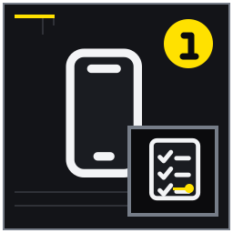

入居初週に連絡先を三種類登録する
管理、生活インフラ、緊急機関を使い分ける。
MITSUKE RENT GUIDE 09
日常の小さな困り事を契約・市の公式ルール・管理窓口へ正しく振り分け、記録して早期連絡する生活記事。
入居中の暮らしでは、資料が全部そろうのを待つより、確認済み・未確認・専門家へ聞く事項を分けるほうが実務は進みます。この記事は見付の戸建て賃貸へ入居した人、集合住宅から移り屋外管理や地域ルールに不慣れな世帯に向け、14の論点を現地確認と相談準備の順に整理しました。日常の小さな困り事を契約・市の公式ルール・管理窓口へ正しく振り分け、記録して早期連絡する生活記事。 結論を保証するものではなく、対象物件と契約条件に合わせて確認先を選ぶためのガイドです。
想定している検索時の疑問は、「戸建て賃貸 庭 手入れ」「見付 ごみ 自治会」「賃貸 設備故障 連絡」で入居後の実務を知りたい。 以下では広告上の一言で判断せず、記録、比較、相談境界、次の行動を章ごとに示します。
入居後のトラブル対応で大切なのは、原因や責任を自分で決めることではなく、早く正確に状況を伝えることです。設備名、場所、発生時刻、症状、生活への影響、写真や表示番号をそろえると、管理窓口が緊急度と手配先を判断しやすくなります。契約書で通常窓口と夜間緊急窓口を確認し、電気・水道・ガス等の事業者や警察・消防との使い分けも家族で共有します。
住まいの履歴は、入居初日の写真だけで終わりません。傷、臭い、音、ひび、設備のエラー、庭木の変化を、発生日と条件付きで同じ場所へ記録します。雨の日だけ発生する臭いなどは、天候と換気状態が分かると担当者へ説明しやすくなります。ただし記録から原因を自己診断せず、使用停止が必要な異常や安全上の不安は早めに指定窓口へ連絡してください。
水漏れや設備故障では、人の安全と被害拡大の防止を優先します。安全に可能な止水や家財の移動は行っても、電気設備の近くへ無理に触れたり、機器を分解したりしません。水が出る場所、流量、エラー表示、異音や臭い、周囲への影響を伝え、受付番号と次の連絡予定を残します。自分で業者を呼ぶ必要があるかも、契約の連絡手順に従って確認します。
庭と外回りは季節で負担が変わります。梅雨前の排水口、夏の除草、秋の落ち葉、強風前の飛散物を年間予定へ入れ、契約で決めた借主の管理範囲を守ります。高木、蜂の巣、隣地へ近づく枝は写真で位置と高さを伝え、自分の判断で伐採や隣地立入りをしません。小さな変化の段階で連絡すれば、安全な方法や担当を相談しやすくなります。
自治会、ごみ、近隣の困り事は、契約窓口だけですべて解決するとは限りません。ごみは磐田市の住所別カレンダーと現地表示、自治会活動は地域の窓口、契約上の義務は管理側というように回答元を分けます。近隣の音などを相談するときは、相手への評価ではなく日時、頻度、継続時間、生活への影響を記録し、直接対決や個人を特定するネット投稿を避けます。
鍵紛失、大雨、長期停電などは、起きてから連絡先を探すと判断が遅れます。住所が分かる物と鍵を同時に失った場合、家族が別の場所にいる時に避難情報が出た場合などを想定し、警察、管理、行政情報の順序を決めます。DIYや設備追加は緊急対応と別で、仕様書と設置場所を示して事前承認を得ます。日常記録と緊急連絡表を使い分けてください。
連絡文は短くても、担当者が状況を再現できる内容にします。「壊れた」ではなく、どの設備が、いつから、どの操作で、どんな表示や音を出し、現在何が使えないかを伝えます。写真や動画を送る場合は、危険を冒して撮影せず、型番と対象箇所が分かる範囲にします。連絡後は受付番号と指示された応急対応を履歴へ追加します。
日常の庭管理では、借主が行える小さな手入れと、貸主側へ相談すべき作業を分けます。脚立が必要な高さ、電線や屋根に近い枝、薬剤散布、害虫の巣、境界を越えそうな樹木は安全と権利に関わります。場所と大きさが分かる写真を撮り、作業前に担当と費用の扱いを確認してください。
防災準備は、備蓄品を買うだけでは完了しません。停電時に連絡先を見られる紙の控え、家族が別行動中の集合方針、避難先までの経路、車を使えない場合の移動を確認します。自治体の情報は更新されるため、保存画像だけに頼らず、気象情報や避難情報を受け取る公式な手段を登録します。
暮らしのルールを家族で共有するときは、禁止事項の一覧だけでなく、迷った時の連絡先を添えます。ごみ、庭、設備、鍵、近隣、DIYごとに最初の相談先が分かれば、無断対応を防げます。月に一度、未回答や継続中の修理がないか住まいの履歴を見直し、完了した対応にも日付と結果を残します。
連絡した不具合が修理待ちになった場合は、受付日、訪問予定、部品待ち、応急対応、生活への影響を一つの案件として追います。同じ症状を家族が別々に連絡すると情報が分散するため、代表者と共有方法を決めてください。ただし火災、ガス臭、大量漏水、人身の危険などは記録整理より安全確保と緊急通報を優先します。修理が終わったら、作業日、交換部品、再発時の連絡方法、費用説明を履歴へ残します。庭や近隣の相談も、連絡して終わりではなく、指示された対応と経過を記録します。こうした履歴は貸主側との責任争いのためだけでなく、家族が同じ応急手順を取り、次の担当者へ正確な状態を引き継ぐための生活道具になります。
入居後に管理窓口や連絡方法が変わった場合は、契約時の一覧をそのまま使い続けません。届いた案内の発行元と適用日を確認し、家族のスマホ、紙の控え、住まいの履歴を同じ日に更新します。古い番号はすぐ削除せず、いつまで使えた情報かを記してから保管を終了します。日々の小さな更新を続けることで、緊急時にも最新の窓口へ迷わず状況を伝えられます。
設備の応急対応は、管理窓口から指示された内容だけを安全な範囲で行います。止水栓やブレーカーの位置は平常時に確認し、操作対象が分からなければ無理に触れません。作業前後の状態、指示した担当者、再開してよい条件を記録します。症状が一度消えても、異臭、発熱、漏電のおそれなど安全に関わる場合は、自己判断で使用を再開せず追加指示を求めます。
自治会や近隣とのやり取りも、個人情報へ配慮しながら必要な範囲で記録します。回覧や防災連絡の受取り方、ごみ当番、地域清掃など予定が分かったら家族カレンダーへ入れます。契約上の義務か地域からの案内かを混同せず、対応が難しい事情がある場合は早めに適切な窓口へ相談し、無断欠席や放置の前に調整方法を確認してください。
退去まで安心して暮らすため、半年ごとに契約一式、設備表、連絡先、住まいの履歴を見直します。修理済みの案件は完了日を付け、継続観察する異変は最新写真へ更新します。庭管理や自治会の年間予定、防災情報、保険の更新も同じ時期に確認すると、期限の見落としを減らせます。連絡先が変わったら家族全員の登録を更新し、古い番号による遅れを防ぎます。日常の記録が目的化しないよう、安全な利用、早期連絡、家族での引継ぎに役立っているかを確かめてください。
管理、生活インフラ、緊急機関を使い分ける。
自治会名、班、会費、回覧、防災情報の窓口を把握する。

設備名、症状、発生時刻、表示、生活影響を揃える。
穴あけ、外壁固定、電気工事など許可要否を確認する。
確認の中心：管理、生活インフラ、緊急機関を使い分ける。 管理会社・貸主の窓口、電気・水道・ガス等の生活インフラ、警察・消防など緊急機関を用途別に登録します。営業時間外の番号と契約番号も添え、家族の誰でも症状に合う連絡先を選べるようにします。
具体例：漏水は管理窓口、停電範囲は電力情報へ確認する。 漏水は管理窓口、地域一帯の停電は電力会社の情報というように、最初の連絡先を症状別に分けます。
注意：緊急時にSNS検索だけへ頼らない。
次の一歩：家族全員のスマホへ名称付き登録する。 スマホの連絡先名に用途を含め、紙の一覧も分電盤付近など安全な場所へ置きます。
確認の中心：内見後に分かった傷、臭い、動作不良を期限内に記録する。 家具搬入後に見つけた傷、臭い、動作不良は、場所、日時、写真、生活への影響を早めに管理窓口へ伝えます。原因や費用負担を先に断定せず、入居時状態として受領されたことを確認します。
具体例：家具搬入後に隠れていた床傷を撮る。 家具の下から既存傷が見つかったら、家具を移せる範囲で全景と近接を撮ります。
注意：原因や費用負担を先に断定しない。
次の一歩：場所・日時・写真を窓口へ送る。 契約で定めた申告期限を確認し、送信メールと写真原本を保存します。
確認の中心：地区別収集日、分別、指定袋、集積所を確認する。 磐田市の住所に対応する収集カレンダー、分別ガイド、指定袋、集積所を確認します。前住所のルールを流用せず、資源ごみ、粗大ごみ、引越段ボールを別々に調べます。
具体例：見付地区の該当カレンダーを保存する。 見付地区の該当カレンダーをスマホへ保存し、集積所まで実際に歩いて利用時間を見ます。
注意：前住所の分別方法を流用しない。
次の一歩：市公式ページをブックマークする。 曜日を家族カレンダーへ登録し、集積所の現地表示と公式情報を照合します。
確認の中心：自治会名、班、会費、回覧、防災情報の窓口を把握する。 自治会名、班、会費、回覧、防災連絡、清掃やごみ当番について、契約上の説明と地域の運用を分けて確認します。仲介担当が分からない事項は自治会または市の窓口へ照会します。
具体例：転入後に隣組の連絡先を仲介へ尋ねる。 転入後の連絡先が不明なら、まず仲介担当へ自治会名と確認方法を尋ねます。
注意：運用は地域ごとに違い、一律に語らない。
次の一歩：不明事項を自治会または市窓口へ確認する。 回答元と確認日を記録し、別地区の経験から参加条件を決めつけません。
確認の中心：除草、落ち葉、排水口、散水を契約分担に沿って行う。 除草、落ち葉、排水口、散水を季節別の予定にし、契約で定めた借主範囲と照合します。月一回の外周確認で写真を残すと、小さな変化を早く管理窓口へ相談できます。
具体例：梅雨前に側溝周辺の落ち葉を確認する。 梅雨前は排水口周辺の落ち葉と水の通り道を、安全な範囲で点検します。
注意：高木や危険箇所を無理に作業しない。
次の一歩：月一の外周確認日を設定する。 高木や蜂など危険な箇所は無理に作業せず、位置写真を添えて担当窓口へ連絡します。
確認の中心：越境前の枝、落ち葉、虫の状況を記録し管理へ連絡する。 枝が隣地へ越える前に、木の位置、枝先の高さ、塀との距離、落ち葉や虫の状況を写真で記録します。借主の判断で隣地へ入ったり樹形を大きく変えたりせず、管理窓口へ早めに相談します。
具体例：枝先が塀を越えそうな段階で写真共有する。 枝先が塀を越えそうな段階なら、全景と境界付近の写真で進行状況を共有します。
注意：自分の判断で隣地へ入り剪定しない。
次の一歩：位置と高さが分かる写真を送る。 連絡日と指示内容を住まいの履歴へ残し、作業担当と実施予定を確認します。
確認の中心：排水口、飛散物、停電備え、避難経路を確認する。 大雨の予報が出たら、危険になる前に排水口、飛散物、停電備え、避難経路を点検します。磐田市の最新防災情報を受け取る方法を家族で共有し、外出中の場合の集合方針も決めます。
具体例：植木鉢を屋内へ移し市情報を確認する。 植木鉢は風雨が強まる前に屋内または安全な場所へ移し、避難情報の確認時刻を決めます。
注意：危険が迫ってから屋外作業をしない。
次の一歩：家族の避難判断時刻を決める。 危険が迫ってから屋外作業をせず、人の安全と行政の避難情報を優先します。
確認の中心：設備名、症状、発生時刻、表示、生活影響を揃える。 設備故障の連絡は、設備名、症状、発生時刻、エラー表示、生活への影響をそろえます。型番写真と短い動画があれば、管理側が修理手配の緊急度を判断しやすくなります。
具体例：給湯器のエラー番号と水は出るかを報告する。 給湯器ならエラー番号、お湯と水の状態、異音や臭いの有無を安全な範囲で報告します。
注意：分解や無断業者手配を先にしない。
次の一歩：型番写真と動画を添える。 分解や無断業者手配をせず、受付番号と次の連絡予定を記録します。
確認の中心：安全に可能な止水、家財保護、階下・周辺影響を優先する。 水漏れを見つけたら、人身安全を確保し、安全に可能なら止水し、タオルや容器で家財と周辺への拡大を抑えて管理窓口へ連絡します。漏水位置、流量、開始時刻、電気設備との距離を伝えてください。
具体例：洗面下から漏れた水を受け管理へ即連絡する。 洗面台下なら物を避けて水を受け、全景と配管付近を撮り、漏れ続けているかを報告します。
注意：電気設備付近では無理に触らない。
次の一歩：緊急窓口と保険連絡の指示を確認する。 電気設備付近や大量漏水には無理に触れず、緊急窓口と保険連絡の指示に従います。
確認の中心：紛失場所、時刻、識別情報、予備鍵を整理する。 鍵を紛失したら、最後に確認した場所と時刻、住所が分かる物との同時紛失、予備鍵の状況を整理します。防犯上の緊急度を判断できるよう、警察への届出と管理窓口への連絡順を確認します。
具体例：住所が分かる物と鍵を同時紛失した例を想定する。 住所記載の鞄と鍵を同時に失った場合は、その事実を伏せず早急に管理側へ伝えます。
注意：無断でシリンダー交換しない。
次の一歩：警察届と管理窓口の順を確認する。 借主判断でシリンダー交換せず、受付番号、鍵本数、交換指示を記録します。
確認の中心：日時、頻度、影響を感情語と分けて伝える。 近隣の音や迷惑行為は、日時、継続時間、頻度、生活への影響を感情語と分けて記録します。直接対決や個人を特定する投稿を避け、管理窓口へ事実と希望する対応を簡潔に伝えます。
具体例：早朝の車両音を一週間記録する例を置く。 早朝の車両音なら一週間の発生時刻を記録し、単発か継続か分かるようにします。
注意：直接対決や個人特定のネット投稿を避ける。
次の一歩：管理窓口へ求める対応を簡潔に伝える。 相談後も経過を残し、緊急性がある場合は警察等の適切な窓口を選びます。
確認の中心：穴あけ、外壁固定、電気工事など許可要否を確認する。 DIY、アンテナ、宅配ボックス、充電設備などは、穴あけ、外壁固定、電気工事の有無を仕様書で示し、事前に許可を確認します。小さな取付けでも安全と原状回復へ影響します。
具体例：宅配ボックスを壁固定したい例を扱う。 宅配ボックスを壁固定したい場合は製品寸法、固定方法、設置場所の写真を添えます。
注意：小規模でも原状回復や安全に関わる変更を無断で行わない。
次の一歩：仕様書と設置場所を添えて承認を求める。 承認条件と退去時の扱いを保存し、許可範囲を超える施工を行いません。
確認の中心：臭い、音、ひび、設備不調を経時記録する。 雨の日だけの臭い、時々鳴る音、少しずつ広がるひびなどを、日付と条件付きで住まいの履歴へ残します。過去の写真と同じ角度で比較すれば、管理窓口へ変化を具体的に伝えられます。
具体例：雨の日だけ出る窓際臭を日付で追う。 窓際の臭いは天候、換気、発生した部屋、継続時間を記録し、原因は専門確認へ委ねます。
注意：記録があっても原因診断は専門家へ委ねる。
次の一歩：月末に管理連絡済みか見直す。 月末に未連絡の異変がないか見直し、送信済み記録と回答を対応させます。
確認の中心：借り手として分かりやすかった設備表や連絡方法を家族の実家管理に応用する。 借り手として役立った設備表、型番写真、修繕履歴、緊急連絡先の整理方法は、親の実家や空き家の情報収集にも応用できます。ただし借家の情報と家族所有物件の資料はフォルダも権限も分けます。
具体例：親の空き家でも型番・修繕履歴を集め始める例を示す。 親の家では、設備型番、設置時期、修繕した年、鍵の保管先から無理なく集め始めます。
注意：借りている家の情報と家族所有物件の情報を混同しない。
次の一歩：実家カルテの項目を確認する。 実家カルテの項目を確認し、所有者や家族の同意を得た範囲で記録します。
入居中の暮らしの準備状況を確認するため、完了・未完了だけでなく根拠資料の場所も記してください。
契約と説明資料で日常管理、高木、危険作業等の分担を確認する。 水漏れは止める・守る・連絡するの確認結果を添えると、一般論と対象物件の事情を分けて相談できます。分からない欄を無理に埋める必要はありません。
緊急時を含む連絡・手配手順は契約と管理窓口へ確認し、無断手配を避ける。 DIY・アンテナ・充電設備は事前確認するの確認結果を添えると、一般論と対象物件の事情を分けて相談できます。分からない欄を無理に埋める必要はありません。
仲介・管理へ住所上の情報を尋ね、最新の運用は自治会または磐田市の窓口で確認する。 入居初週に連絡先を三種類登録するの確認結果を添えると、一般論と対象物件の事情を分けて相談できます。分からない欄を無理に埋める必要はありません。
磐田市の最新ルールを確認し、通常集積所へ無断で出さない。 自治会との接点を落ち着いて確認するの確認結果を添えると、一般論と対象物件の事情を分けて相談できます。分からない欄を無理に埋める必要はありません。
境界、所有、契約、安全の論点があるため管理窓口へ事前に相談する。 大雨前は敷地と避難情報を点検するの確認結果を添えると、一般論と対象物件の事情を分けて相談できます。分からない欄を無理に埋める必要はありません。
制度や手続は更新されるため、公開元の最新情報と対象範囲を確認してください。リンク先の説明は個別物件への判断を代替しません。
本記事は2026年8月時点の一般的な情報整理と相談準備を目的としています。対象物件の安全性、適法性、契約条件、税務上の取扱い、修繕の必要性を診断・保証するものではありません。法務は弁護士・司法書士、税務は税務署・税理士、建物の安全や工事は建築士・施工業者、行政制度は担当窓口へ個別に確認してください。富士ヶ丘サービス株式会社は宅地建物取引業者として、戸建て賃貸の現況整理、募集条件、管理方法、売却を含む選択肢の相談を承ります。